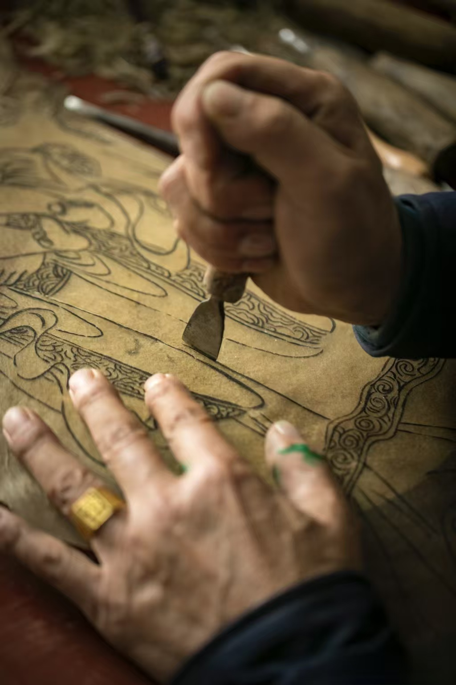
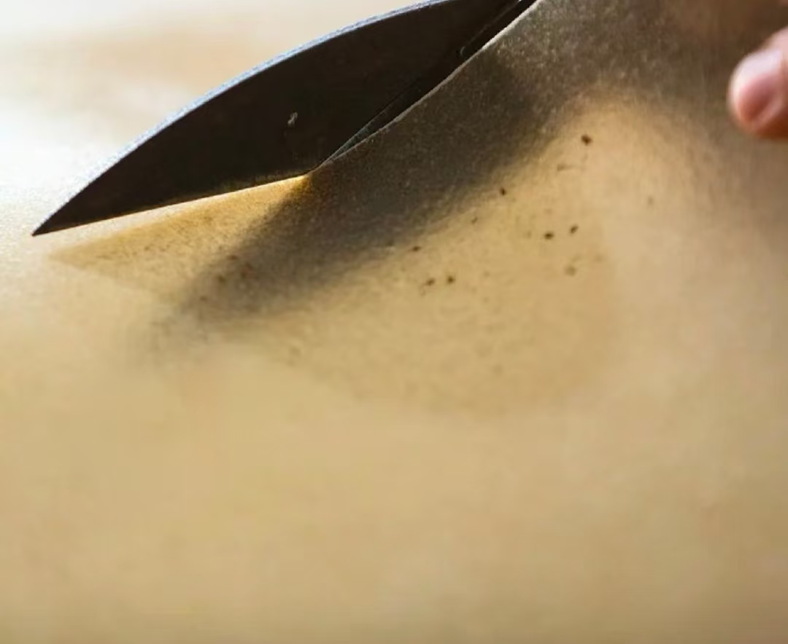
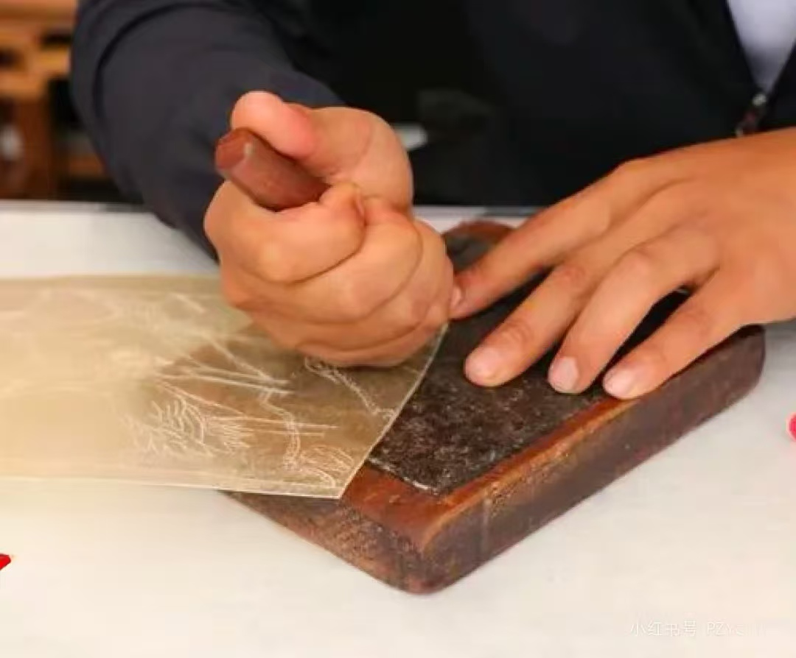
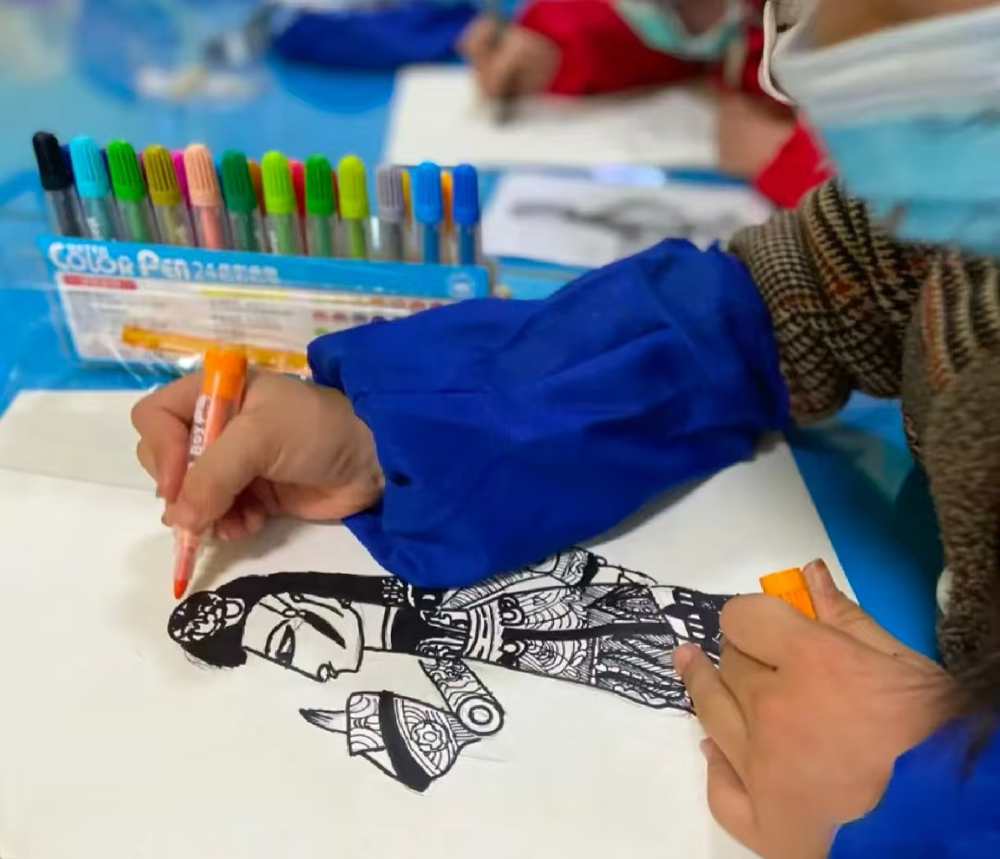
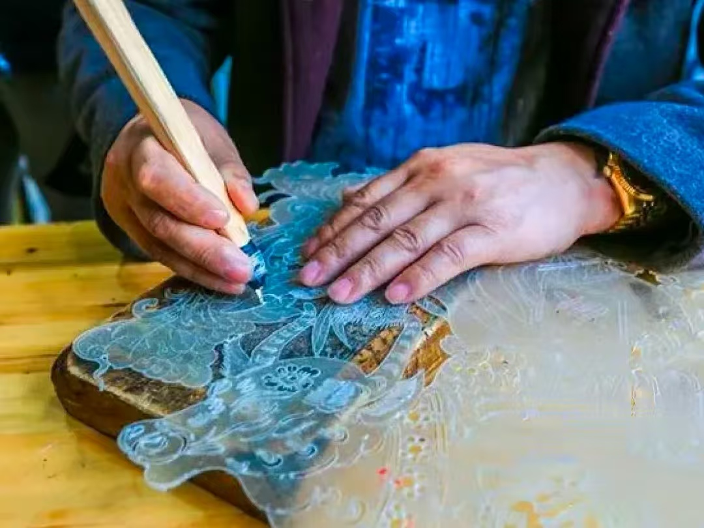
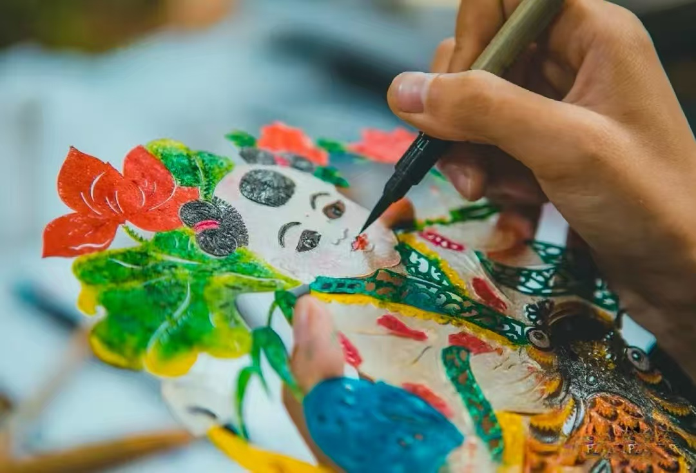
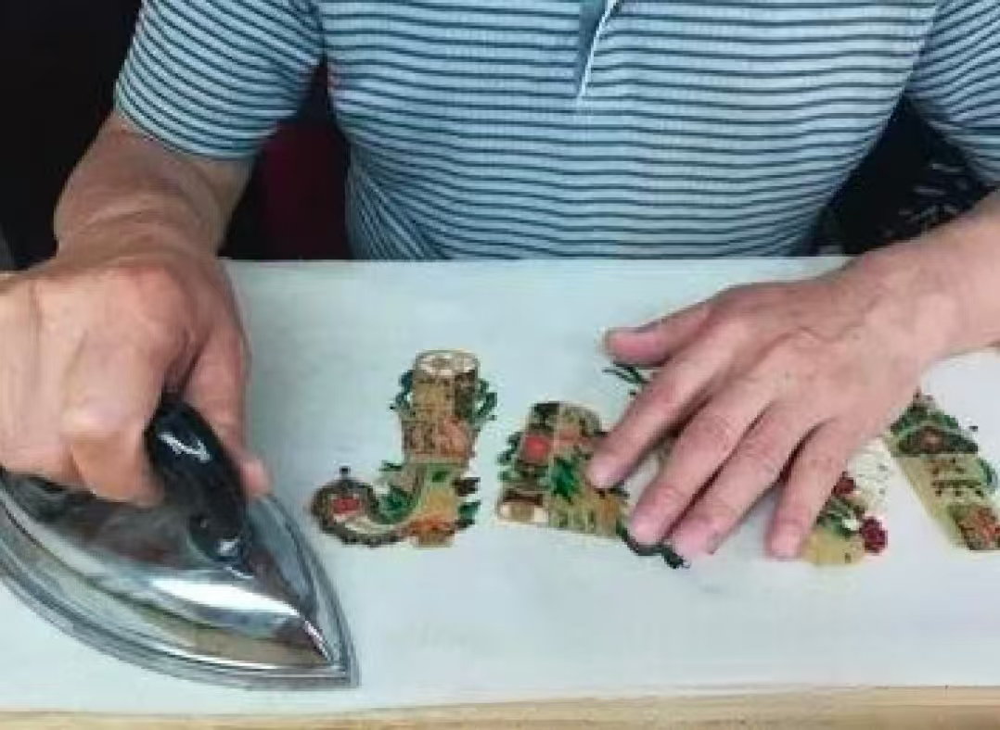

传统工艺与现代创新

选择优质的黄牛皮或驴皮，厚度适中，质地均匀。优质的皮料是制作精美皮影的基础，需要经过严格筛选，确保皮料无瑕疵、厚度一致。

将生皮浸泡、刮去毛肉，然后绷紧晾干。这个过程需要反复进行多次，确保皮料柔软透明，便于后续雕刻和上色。

在皮料上绘制人物或道具的轮廓。传统皮影画稿需要遵循严格的造型规范，同时也要根据角色性格特点进行艺术创作。

使用刻刀沿着画好的线条进行雕刻。雕刻是皮影制作中最精细的环节，需要工匠有高超的技艺和极大的耐心，才能雕刻出精美的纹饰。

使用矿物颜料为皮影上色，色彩鲜艳持久。传统上色工艺讲究色彩搭配和谐，层次分明，能够经受长时间使用而不褪色。

将各部件用线连接，安装操纵杆。装订时需要确保各关节活动灵活，同时整体结构牢固，能够承受表演时的频繁操作。
在下方画布上，尝试设计你自己的皮影角色。使用铅笔工具绘制轮廓，橡皮工具修改错误，完成后点击保存按钮保存你的作品。
皮影设计通常采用侧脸轮廓，突出人物特征。尝试设计一个具有湖南地方特色的角色，如渔夫、书生或神话人物。
在此区域绘制你的皮影设计